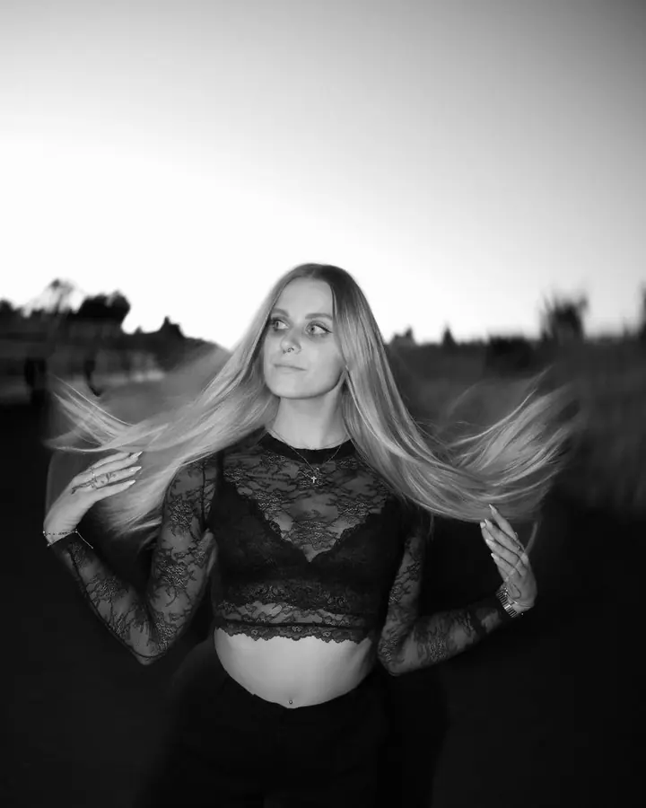
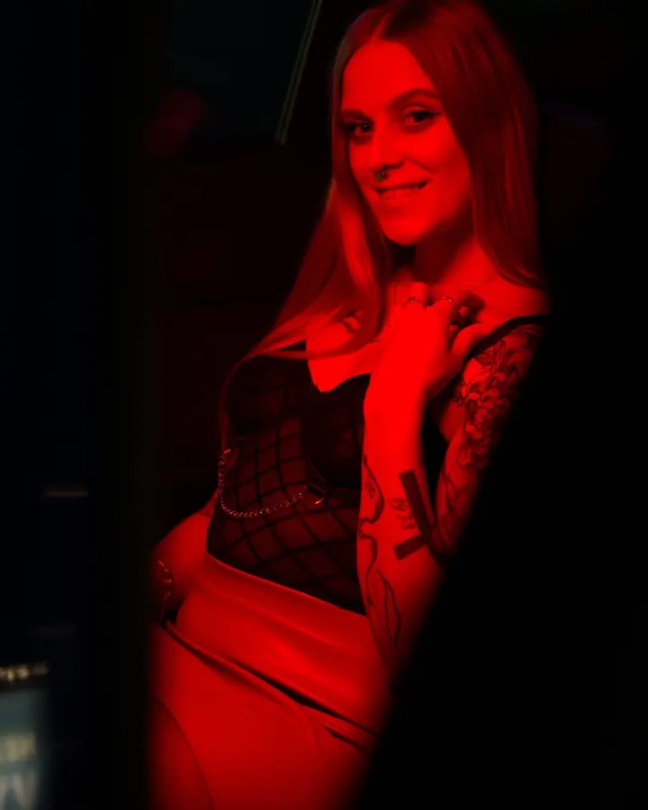

Portréty a byznys portréty
Portréty fotím v ateliéru i venku. Hodí se pro vás osobně i pro firemní prezentaci.

Fotograf a kameraman
Jmenuji se Martin Grus a jsem fotograf a kameraman ze Znojma. Fotím svatby a portréty, točím svatební video a rád vám ukážu, jak vypadáte v lepším světle.
Zeptat se na termín
Portréty fotím v ateliéru i venku. Hodí se pro vás osobně i pro firemní prezentaci.
Fotím i natáčím, takže na svatbě můžete mít jednoho člověka na fotky i na video. Nemusíte pak skládat tým z cizích lidí, kteří se navzájem neznají.
Před svatbou se rád uvidím, klidně jen online. Proberete se mnou, co od dne čekáte, a hlavně se poznáme, abych na obřad nepřišel jako cizí člověk. U portrétů ani u rodinného focení schůzka nutná není.
Na úpravě fotek si dávám záležet, protože je to stejná část mé práce jako samotné focení. Proto neupravené fotky nepředávám. Pokud si ale chcete fotky vybrat sami, stačí se domluvit.
Napište mi nebo zavolejte, jaký termín a místo máte v plánu a jestli chcete fotky, video, nebo obojí.
U svateb se uvidíme osobně nebo online. Projdeme si průběh dne a ujistíme se, že si sedneme i jako lidé.
Termín potvrdíte zálohou. V den focení nebo svatby jsem s vámi a vy se můžete věnovat sobě a svým hostům.
Upravené fotky nebo video vám pošlu přes cloud, případně na USB disku. Doplatek řešíme až při předání.
U svatby je to dobré, stačí i online. U rodinného, těhotenského nebo portrétního focení to nutné není.
Ve dvou částech. Zálohu skládáte při rezervaci termínu, doplatek až při předání fotek nebo videa.
Neupravené fotky ani záznam nepředávám, úprava je součástí mé práce. Pokud si ale chcete fotky vybrat sami, domluvíme se.
Elektronicky přes cloud. Domluvit se dá i předání na USB, třeba na dřevěném USB disku, a z fotek můžu připravit fotoknihu, booklet nebo obraz na zeď.